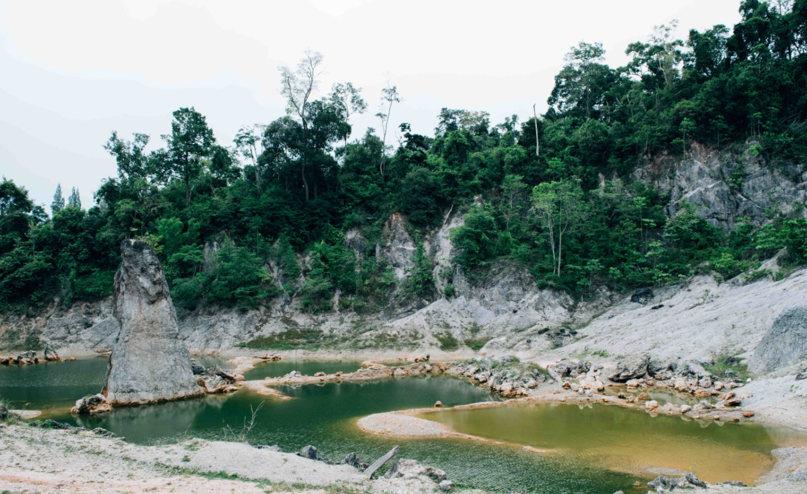

ขนอม แกรนด์แคนยอน ที่เที่ยวนครศรีธรรมราช ภูเขาหิน สวยแปลกแต่ปังมาก

ขนอมแกรนด์แคนยอน ที่เที่ยวธรรมชาติสวยๆ ตั้งอยู่ใน อำเภอขนอม จังหวัดนครศรีธรรมราช ซึ่งจะอยู่ติดริมถนนเลย จะเป็นพื้นที่ของลานหินและดินสีขาว ที่มีรูปร่างรูปทรงแปลกตา เป็นแท่งหินเกิดขึ้นมาเองตามธรรมชาติ ตั้งอยู่กลางแอ่งน้ำสีเขียว เลยทำให้ที่นี่เกิดเป็นวิวทิวทัศน์ที่สวยแต่แปลกตาขึ้นมาค่ะ ทำให้นักท่องเที่ยวที่ผ่านไปมานั้น ต่างก็ต้องแวะมาถ่ายภาพสวยๆ เก็บเอาไว้กันเลย

ใครอยากจะมาถ่ายรูปสวยๆ กับหินแปลกนี้ ถ้ามาตอนเช้าก็จะได้แสงสวยมากค่ะ แต่ก็ต้องพกร่มรวมถึงอุปกรณ์กันแดดมาด้วยนะคะ เพราะอากาศจะร้อนมากๆ ส่วนมุมที่แนะนำให้ไปแชะกัน ก็คงจะหนีไม่พ้นมุมของชั้นหินสวยๆ ที่เราสามารถไปยืนสวยๆ รับลมชิลๆ แชะได้เลยค่ะ กิจกรรมที่นี่นอกจากการถ่ายรูปแล้ว ก็ยังสามารถให้อาหารปลาได้ด้วยค่ะ ทั้งปลานิล ปลาสวาย ปลาทับทิม เยอะมากจริงๆ